ГОЛОВКА БЛОКА ЦИЛИНДРОВ > ПРОВЕРКА |
| 1. ОЧИСТИТЕ ГОЛОВКУ БЛОКА ЦИЛИНДРОВ В СБОРЕ |
С помощью скребка для прокладок удалите остатки материала прокладки с поверхности головки блока цилиндров, которая соприкасается с блоком цилиндров.
Мягкой кистью и растворителем тщательно очистите головку блока цилиндров.
| 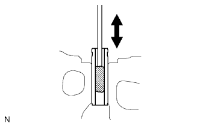 |
С помощью специальной кисти растворителем очистите все направляющие втулки клапанов.
| 2. ПРОВЕРЬТЕ ГОЛОВКУ БЛОКА ЦИЛИНДРОВ В СБОРЕ |
| 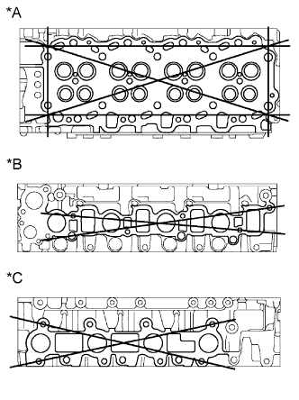 |
Проверьте коробление головки блока цилиндров.
С помощью прецизионной поверочной линейки и комплекта плоских щупов измерьте величину коробления поверхностей головки блока цилиндров, которые соприкасаются с блоком цилиндров и коллекторами.
| *A | Сторона блока цилиндров |
| *B | Сторона впускного коллектора |
| *C | Сторона выпускного коллектора |
Проверьте головку блока цилиндров на отсутствие трещин.
Методом цветной дефектоскопии проверьте камеру сгорания, впускные каналы, выпускные каналы и поверхность блока цилиндров на отсутствие трещин.
При наличии трещин замените головку блока цилиндров в сборе.
| 3. ОЧИСТИТЕ ВПУСКНОЙ КЛАПАН |
Удалите с тарелки клапана нагар скребком для удаления остатков прокладок.
Тщательно очистите клапан металлической щеткой.
| 4. ПРОВЕРЬТЕ ВПУСКНОЙ КЛАПАН |
Микрометром измерьте диаметр штока клапана.
| 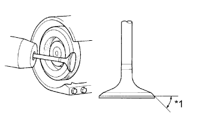 |
Проверьте угол наклона рабочей фаски на тарелке клапана.
Отшлифуйте клапан, чтобы удалить раковины и нагар.
Убедитесь, что рабочая фаска на тарелке клапана имеет правильный угол наклона.
| *1 | Угол наклона фаски тарелки клапана |
| 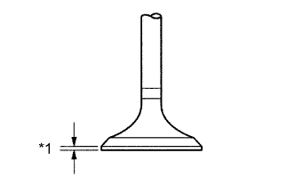 |
Проверьте предельно допустимую толщину кромки тарелки клапана.
| *1 | Предельно допустимая толщина: |
Проверьте общую длину клапана.
| 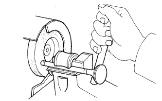 |
Проверьте степень износа торца штока клапана.
Если торец штока клапана изношен, восстановите его форму шлифовкой или замените впускной клапан.
| 5. ОЧИСТИТЕ ВЫПУСКНОЙ КЛАПАН |
Удалите с тарелки клапана нагар скребком для удаления остатков прокладок.
Тщательно очистите выпускной клапан металлической щеткой.
| 6. ПРОВЕРЬТЕ ВЫПУСКНОЙ КЛАПАН |
Микрометром измерьте диаметр штока клапана.
Проверьте угол наклона рабочей фаски на тарелке клапана.
Отшлифуйте клапан, чтобы удалить раковины и нагар.
Убедитесь, что рабочая фаска на тарелке клапана имеет правильный угол наклона.
| *1 | Угол наклона фаски тарелки клапана |
Проверьте предельно допустимую толщину кромки тарелки клапана.
| *1 | Предельно допустимая толщина: |
Проверьте общую длину клапана.
Проверьте степень износа торца штока клапана.
Если торец штока клапана изношен, восстановите его форму шлифовкой или замените выпускной клапан.
| 7. ПРОВЕРЬТЕ ВНУТРЕННЮЮ ПРУЖИНУ СЖАТИЯ |
| 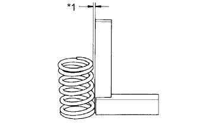 |
Стальным угольником измерьте отклонение пружины.
| *1 | Отклонение |
| 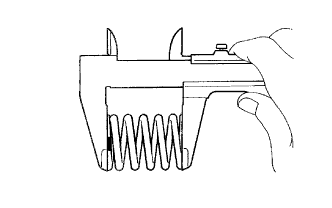 |
С помощью штангенциркуля замерьте длину пружины в свободном состоянии.
| Параметр / Устройство | Заданные условия |
| Для моделей с DPF | 48,4 мм (1,91 дюйма) |
| Для моделей без DPF | 46,5 мм (1,83 дюйма) |
| 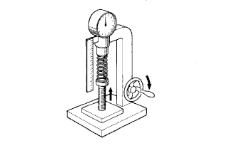 |
На специальном стенде измерьте усилие сжатия клапанной пружины при номинальной длине после ее установки.
| Параметр / Устройство | Заданные условия |
| Для моделей с DPF | 175 - 193 Н (17,9 - 19,6 кгс, 39,4 - 43,3 фунт-силы) |
| Для моделей без DPF | 150 - 165 Н (15,3 - 16,9 кгс, 33,7 - 37,0 фунт-силы) |
| 8. ПРОВЕРЬТЕ НАПРАВЛЯЮЩУЮ ВТУЛКУ ВПУСКНОГО КЛАПАНА |
| 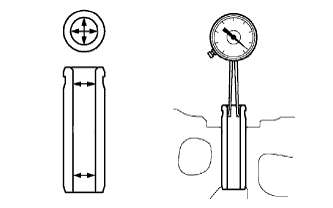 |
Нутромером измерьте внутренний диаметр направляющей втулки клапана.
Вычтите измеренный диаметр штока клапана (см процедуры проверки впускных клапанов выше) из измеренного внутреннего диаметра направляющей втулки клапана.
| 9. ПРОВЕРЬТЕ НАПРАВЛЯЮЩУЮ ВТУЛКУ ВЫПУСКНОГО КЛАПАНА |
| 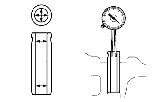 |
Нутромером измерьте внутренний диаметр направляющей втулки клапана.
Вычтите измеренный диаметр штока клапана (см процедуры проверки выпускных клапанов выше) из измеренного внутреннего диаметра направляющей втулки клапана.
| 10. ПРОВЕРЬТЕ СЕДЛО ВПУСКНОГО КЛАПАНА |
| 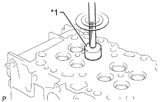 |
Твердосплавной фрезой с углом заточки 45° обработайте поверхности седел клапанов. Снимать слой металла следует не больше, чем требуется для очистки седел клапанов.
| *1 | Твердосплавная фреза (45°) |
| 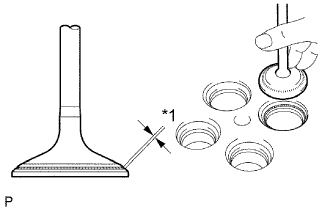 |
Нанесите тонкий слой берлинской лазури на торец клапана.
Слегка вдавите клапан в седло клапана.
Проверьте торец клапана и седло клапана.
Убедитесь в том, что контактные поверхности седла и торца клапана соприкасаются в своих средних частях, а ширина зоны контакта составляет 1,2-1,6 мм (0,0472-0,0630 дюйма).
| *1 | Ширина |
Убедитесь в том, что поверхности контакта седла клапана с торцем клапана равномерно распределены по всему седлу клапана.
Если контактные поверхности не соответствуют требованиям, повторно обработайте поверхность седла впускного клапана. При необходимости замените впускной клапан.
| 11. ПРОВЕРЬТЕ СЕДЛО ВЫПУСКНОГО КЛАПАНА |
| 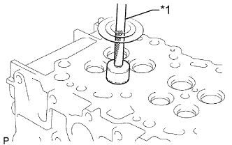 |
Твердосплавной фрезой с углом заточки 45° обработайте поверхности седел клапанов. Снимать слой металла следует не больше, чем требуется для очистки седел клапанов.
| *1 | Твердосплавная фреза (45°) |
Нанесите тонкий слой берлинской лазури на торец клапана.
Слегка вдавите клапан в седло клапана.
Проверьте торец клапана и седло клапана.
Убедитесь в том, что контактные поверхности седла и торца клапана соприкасаются в своих средних частях, а ширина зоны контакта составляет 1,6-2,0 мм (0,0630-0,0787 дюйма).
| *1 | Ширина |
Убедитесь, что поверхности контакта седла клапана с торцом клапана равномерно распределены по всему седлу клапана.
Если контактные поверхности не соответствуют требованиям, повторно обработайте поверхность седла выпускного клапана. При необходимости замените выпускной клапан.
| 12. ПРОВЕРЬТЕ МАСЛЯНЫЙ ЗАЗОР РАСПРЕДВАЛА |
Очистите крышки подшипников и шейки.
Проверьте, нет ли следов растрескивания или зарубок на подшипниках.
Если подшипники повреждены, замените крышки подшипников и головку блока цилиндров в сборе.
Установите распредвал в головку блока цилиндров.
| 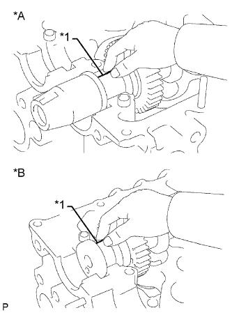 |
Положите полоски сминаемого пластичного калибра Plastigage на все шейки распредвала.
| *A | Со стороны впуска |
| *B | Со стороны выпуска |
| *1 | Сминаемый пластичный калибр Plastigage |
| 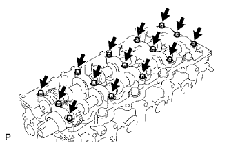 |
Установите крышки подшипников.
Снимите крышки подшипников.
| 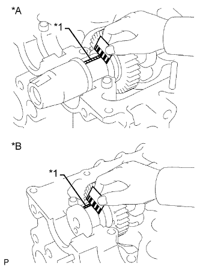 |
Измерьте ширину сминаемого пластичного калибра Plastigage в самой широкой точке.
| *A | Со стороны впуска |
| *B | Со стороны выпуска |
| *1 | Сминаемый пластичный калибр Plastigage |
Полностью удалите сминаемый пластичный калибр (Plastigage).
Снимите распредвал.
| 13. ПРОВЕРЬТЕ ОСЕВОЙ ЗАЗОР РАСПРЕДВАЛА |
Установите распредвал.
| 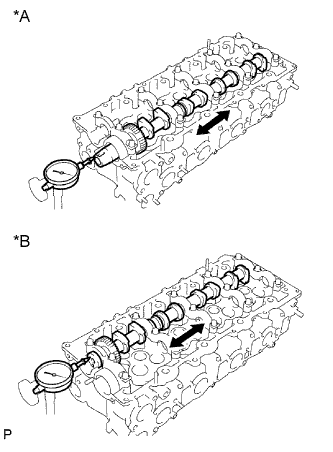 |
Смещая распредвал вперед и назад, измерьте осевой зазор с помощью индикатора часового типа.
| *A | Со стороны впуска |
| *B | Со стороны выпуска |
Снимите распредвал.